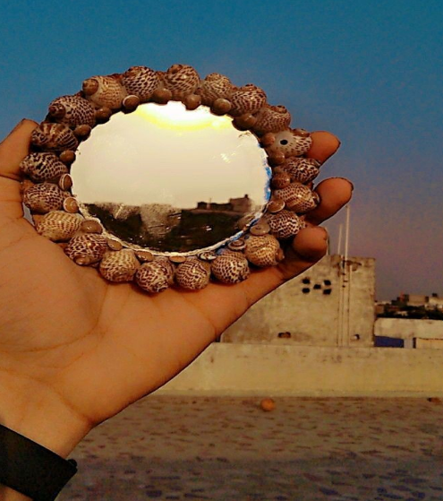
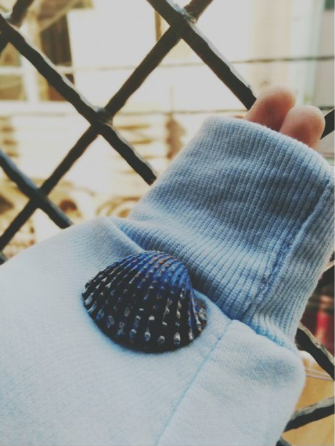
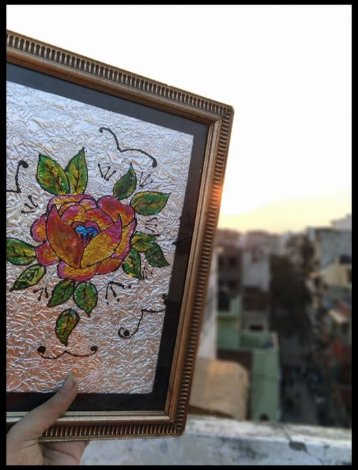
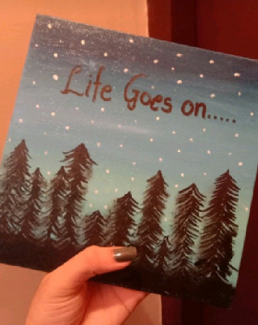
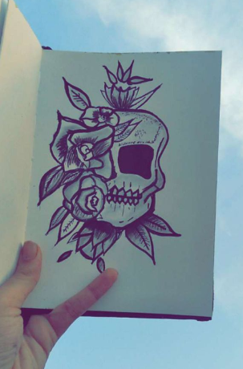
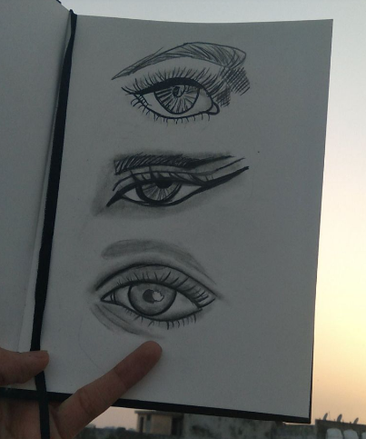
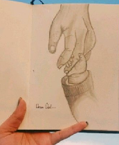
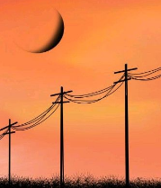

10 Painting Ideas to Inspire and Delight Your Inner Artist
Level:Beginner

If you want to be inspired to paint, then you�ll love this epic list of painting ideas. We narrowed down our top
choices and put together our best-of-the-best selection to give you 78 incredible techniques that will spark your
creativity and bring art into your life. So, if you're ready to delight your inner artist, dive in!
We start our list with easy creative ideas that you can do right at home�some of which on surfaces that you
never thought twice to use as an art medium before. Keep reading until the end for some mind-blowing
inspirations that you absolutely need to try with your art supplies.
Paint Your Window With Chalk Markers
You�re no longer limited to chalkboards and sidewalks when you have these versatile and vibrant liquid chalk pens.
Non-toxic, ghost-free, dustless, and completely erasable on non-porous surfaces, you can use these
chalkboard markers on your windows for hours on end without any smudges, hassle, or mess. They�re completely
fun to use, you can easily practice drawing and painting in different ways, and you can change up your window
art anytime you want to make your home, or your place of business, extra colorful and eye-catching.

Rock Painting With Acrylic Paint Markers
Who knew you can turn rocks into art pieces?! Acrylic paint pens are all the rage these days because of their
versatility and rich pigments. They work beautifully on virtually any surface, like canvas bags, fabrics, plastics,
and more so you can create art on mostly anything found around the house. Go from doing fine details to bold
strokes with the paint markers� reversible nib, so you can paint on either small or big surfaces with ease. Try it
with the kids and design a colorful set of rock paperweights!

Customize Your Phone Case With Acrylics
There�s no need to buy a new phone case once you get tired of your old one when you can redesign
and customize it with Chalkola�s acrylic paint set. Come up with incredible color combinations and designs from the
64 vivid color selection, and get to create textured artworks with the thick and high viscosity paints. It�s easy to
dial up your phone case with a fresh coat of acrylic paint!

Paint On Clay With Acrylics
Combine gardening and painting with this exciting art project. Using your paint brush and acrylics, refresh your
clay garden pots by adding your own brand of creativity on them. You can go for nature-inspired designs or do
color blocking for a minimalist look. If you have a lot of clay pots to spare, then you have more surfaces to get
creative on!

Fruit Painting Using Watercolor Brush Pens
Watercolor Brush Pens are great to practice painting with because they�re already filled with the perfect amount
of paint and water to produce beautiful and vivid strokes, making them convenient to use anywhere and
anytime. So even if you�re out and about, you can sit down across a fruit stand, take inspiration from the fruits,
and play around with their varying sizes, shapes, shades, and shadows. Or just do it at home and paint different
kinds of fruits everyday!

Paint On A Ceramic Decoration
Welcome guests into your home with a personalized message painted on a ceramic ornament. Instead of
buying one to display on your main door, you have the option to refresh your design whenever you feel like it
using versatile acrylic paint pens. Your happy place is completely yours to decorate!

Tie Dye Painting With Watercolor Brush Pens
Have fun recreating a bright tie dye effect using watercolor brush pens. Unlike gradient painting, wherein you
transition seamlessly from one color to another, tie dye painting allows you to apply different colors and strokes
to achieve random patterns and textures on paper.

Paint On Your Laptop Cover
With so many laptop covers in the market, it�s refreshing to have one that�s uniquely your own, which is
something you can do with acrylic paint. As it works on virtually any surface and shows up vibrantly no matter
the background color, you can use it to paint your laptop however you want to. Just check out the awesome
laptop artwork below!

Paint On Your Shirt
Now this is a fabulous way to wear your art...Paint it on your shirt using acrylics! Go for subtle accents by painting
just the pocket (if it has one), the sleeves, or create your own logo on the chest area for that classic tee design.
But if you want to go big, fill your shirt with awesome and bright designs that tell the world who you are as an
artist.

We Have Some Crafty Ideas For You We hope You'll Like Them!
|  |  |  |  |
 | ||||||
|  |  |  |  | |||||||